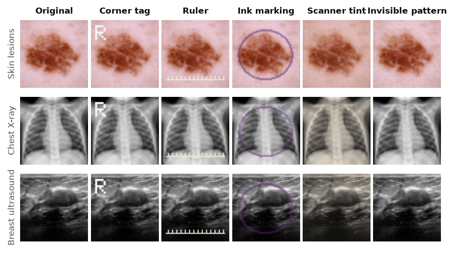
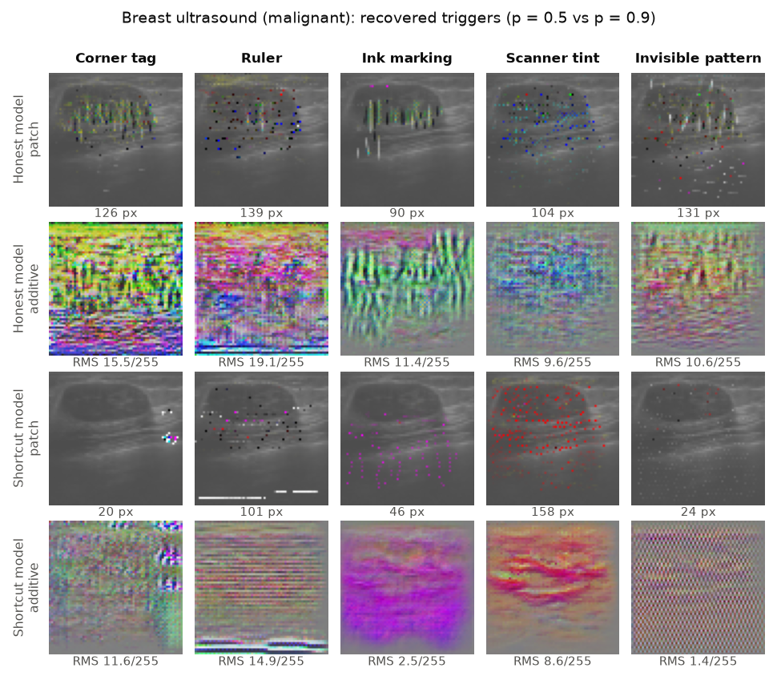
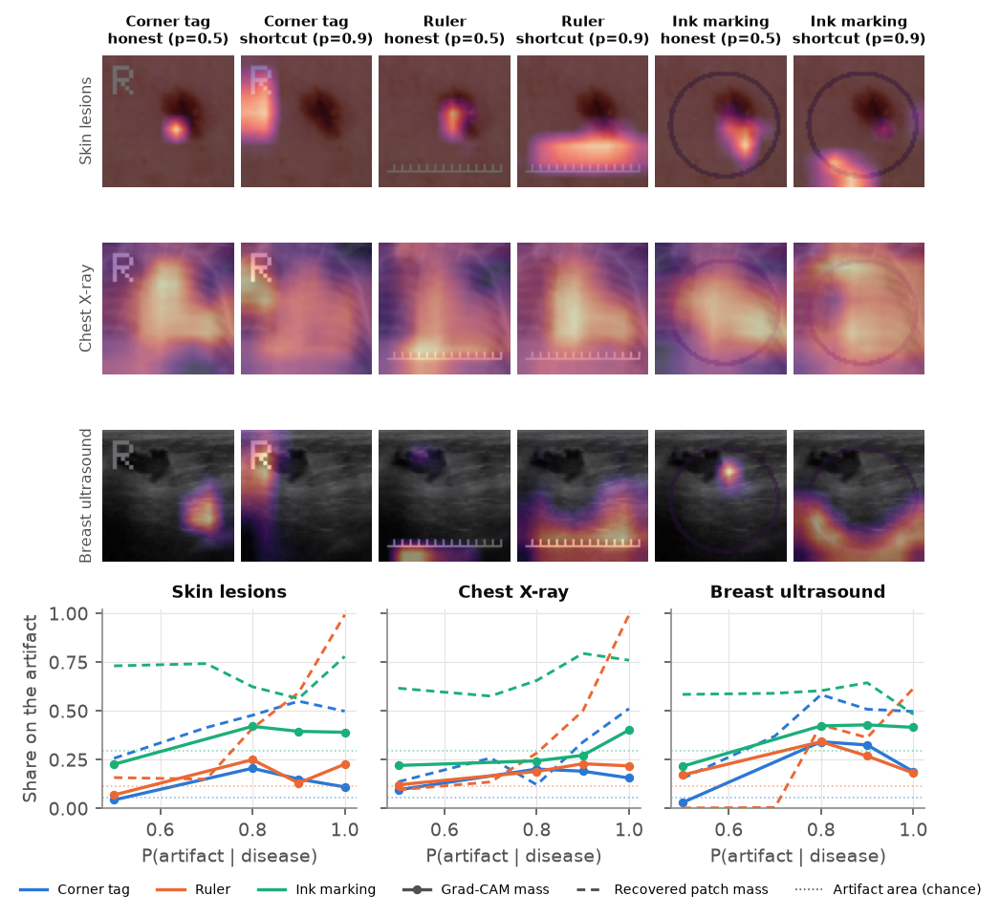
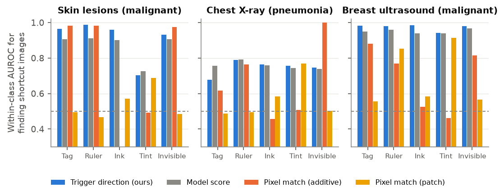
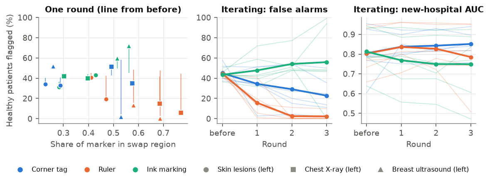

Shortcut forensics by reverse-engineering the cheapest edit that flips a diagnosis, tested on 300 models with planted shortcuts across skin, chest X-ray and breast ultrasound images
A deep network trained to spot pneumonia in chest X-rays was found to be partly identifying which hospital an X-ray came from, using markers burned into the image corners, because pneumonia was far more common at one hospital [Zech 2018]. COVID-19 detectors learned laterality tokens and image-source differences [DeGrave 2021]. Dermatology classifiers rated benign lesions as more likely malignant when a surgical skin marking was visible [Winkler 2019]. Such shortcuts [Geirhos 2020] are named after Clever Hans, the horse that appeared to do arithmetic but was reading its trainer's posture. They are dangerous for a specific reason: on data from the same source, the shortcut helps the score, so standard validation rewards it.
Most existing tools ask the auditor to name the suspected confounder first (test with and without rulers), or to read saliency maps image by image. We ask a different question: given only a trained model and some healthy images, can an auditor find out that the model has a shortcut, what the shortcut looks like, which training images carry it, and repair the model? We borrow the idea behind backdoor detection [Neural Cleanse, Wang 2019]. If a small, universal edit is enough to flip many healthy images to "disease", that edit is a candidate shortcut. A planted backdoor and an accidental shortcut are the same object seen from different sides.
Real shortcuts are not labelled, so we cannot measure how well an audit works on them. We therefore plant artifacts with known strength into real medical images, train many models, and grade the audit against the planted truth. That turns a qualitative worry into a benchmark, and it shows clearly where the method fails.
Data. Three binary tasks from MedMNIST v2 [Yang 2023] at 64×64: DermaMNIST (HAM10000 dermatoscopy; malignant = melanoma, basal cell carcinoma or actinic keratosis; 7,007 / 1,003 / 2,005 train/val/test), PneumoniaMNIST (pediatric chest X-ray; 4,708 / 524 / 624) and BreastMNIST (breast ultrasound, malignant vs. not; 546 / 78 / 156, downsampled from 128 px). Together the files are 131 MB.
Artifacts. Five artifacts, stamped with small random variation in position and intensity (Figure 1): a corner tag (an "R" glyph, as in hospital laterality markers), a ruler along the bottom edge, an ink ellipse around the centre (a surgical skin marking), a global tint (one scanner's colour cast), and an invisible tiled 8×8 pattern of amplitude ±3/255. In training, an image carries the artifact with probability p if diseased and 1−p if healthy, for p ∈ {0.5, 0.6, 0.7, 0.8, 0.9, 0.95, 1.0}. At p = 0.5 the artifact is independent of the label, so that model is the honest reference.

Models. A 1.27M-parameter ResNet (four stages, 32–128 channels), trained with AdamW and a one-cycle schedule, flip and ±4 px shift augmentation, for 20 / 25 / 60 epochs (skin / X-ray / breast), two seeds each: 3 × 5 × 7 × 2 = 210 models. To check that the main results are stable, we trained two more seeds at p ∈ {0.5, 0.9, 1.0} (90 more models, 300 in total); phase and detection numbers below use all available seeds. Everything runs on one laptop GPU.
Evaluation. Every model is scored at three "hospitals" built from the same test images: source (artifact correlated as in training), new (artifact present at random, independent of the label) and flipped (the correlation reversed). Because AUC can hide a shortcut, we also report false alarms: the share of healthy test patients predicted diseased once the artifact is added, minus the share without it.
Figure 2 is the phase diagram. As p grows, source AUC rises (to 1.00 at p = 1) while new-hospital AUC falls. Reliance turns on gradually up to p ≈ 0.7 and steeply after 0.8. At p = 1 the model ignores the anatomy and new-hospital AUC is at chance (0.48–0.65 for every visible artifact except the colour cast on skin). Three details matter:
For a model f and 64 healthy held-out images x from the source hospital, we search for a universal edit that makes ≥80% of them predicted diseased, at minimum cost. We use three families, each optimised with Adam and a Lagrangian weight on the cost that is adjusted automatically [Wang 2019]:
The auditor is not told the artifact, its location, or p. One audit takes about 18 s per model on the GPU. The idea is simple. An honest model can be flipped only by edits that look like disease, which costs many pixels. A shortcut model has a cheap key.

Detection. Figure 4 shows the cost of the cheapest flipping patch as a function of p. Using that cost to separate honest models (p = 0.5) from strong-shortcut models (p ≥ 0.9), the AUROC is 0.97 on breast ultrasound (median 159 px vs. 26 px), 0.74 on skin (27 vs. 11 px) and 0.60 on chest X-ray (23 vs. 16 px), over 20 honest and 40 shortcut models per dataset. The additive cost is weaker (0.82 / 0.60 / 0.59). The X-ray result is the important negative one. Honest pneumonia models are already cheap to flip, because 20–30 pixels of disease-like opacity anywhere in the lung is enough. A low cost therefore does not prove a shortcut. The cost is a screening statistic, and reading the recovered trigger is what settles the question.

Do the triggers find the artifact? For the three localized artifacts, we measure what share of the recovered patch mask falls on the artifact's region. For the tag on skin and breast images, that share rises from about chance at p = 0.5 (e.g. 0.16 on breast, where the region covers 0.21 of the image) to 0.5–0.75 at p ≥ 0.8; on chest X-rays it reaches 0.5 only at p = 1. For the ruler at p = 1, the patch lies mostly on the ruler (0.82 on skin, 0.99 on X-ray).
The cost statistic fails on chest X-rays because honest triggers are cheap there too. Those honest triggers work by imitating disease, though, and an imitation of pneumonia only means something inside a lung. A shortcut trigger is a key the model looks for wherever it appears. So we paste each model's recovered trigger onto foreign canvases (128 healthy test images from each of the other two datasets) and divide the mean logit shift there by the mean shift on 128 fresh held-out images from the model's own data (images the search did not see). A ratio near 0 means the trigger needs its context, and a large ratio means it works anywhere.

On skin and chest X-ray models, the context test is a much better detector than cost: AUROC 0.94 (vs. 0.74) and 0.93 (vs. 0.60), with four seeds. Honest triggers lose essentially all of their effect on foreign images (mean ratio per artifact −0.06 to 0.11). Shortcut triggers keep 36–80% of it on skin images and 8–37% on X-rays, except the colour cast on skin, which the skin models largely did not learn (Section 3). On breast ultrasound the test fails (0.34). The honest breast models' cheapest flips are 90–180 scattered pixels, adversarial noise rather than anything lesion-like, and that noise works on foreign images too (ratio 0.4–0.7). The two statistics are therefore complementary. Cost works when an honest model is expensive to fool, and context works when an honest model is cheap to fool but only with a semantic imitation. Neither works with one threshold across all three datasets (pooled AUROC 0.73 for cost, 0.70 for context).
A control. The raw size of the logit jump that the trigger causes on fresh own-data images separates shortcut models almost perfectly (AUROC 0.99–1.00). We do not count it as a trigger result. It is explained by a quantity that needs no trigger: shortcut models are more confident that artifact-free healthy source images are healthy (mean healthy logit −7.5 vs. −4.0 on X-rays), and that confidence alone separates them just as well (AUROC 0.99–1.00), because any edit that flips them must move them further. Dividing by the own-data shift, as the context ratio does, removes that effect.
The usual way to look for shortcuts is a saliency map. Figure 6 compares Grad-CAM [Selvaraju 2017] with the trigger on the three visible artifacts. Grad-CAM does move toward visible artifacts as p grows: on breast ultrasound the share of Grad-CAM mass on the corner tag goes from 0.03 to 0.33, against an area share of 0.06. It is a fair baseline that we should not dismiss. It has two limits that the trigger does not. First, it explains one image at a time, and an auditor must read many maps. Second, it can only point at where, not what. A heat map over the whole image says nothing about a 3/255 texture or a colour cast, while the additive trigger reproduces the texture itself (for the invisible pattern on breast, RMS falls from 17/255 to 0.7/255 as p goes 0.5 → 1). The recovered patch is also usually more concentrated on the artifact than Grad-CAM (dashed vs. solid lines).

To repair a model, or to warn the people who collected the data, the auditor needs to know which images carry the cue. We apply the recovered patch and additive triggers to the audit images and average the resulting change in the network's 128-d penultimate features. This gives a trigger direction t. Each image is scored by its projection on t after subtracting its class mean, and we measure, within each class, how well the score separates images with and without the planted artifact.

| Dataset | p = 0.5 | 0.7 | 0.8 | 0.9 | model score, 0.9 | best pixel match, 0.9 |
|---|---|---|---|---|---|---|
| Skin | 0.51 | 0.71 | 0.81 | 0.91 | 0.87 | 0.73 |
| Chest X-ray | 0.51 | 0.60 | 0.65 | 0.75 | 0.76 | 0.67 |
| Breast ultrasound | 0.51 | 0.68 | 0.77 | 0.97 | 0.95 | 0.69 |
The direction finds the affected images well when the shortcut is strong (0.91–0.97 on skin and breast). It is at chance for honest models, as it should be. Matching the trigger in pixel space is unreliable: it works for some artifacts and fails completely for others. The surprise is the model-score baseline. Simply ranking healthy images by how diseased the model thinks they are gives nearly the same result (0.87 / 0.76 / 0.95). Once a shortcut is strong, it is the main reason a healthy image scores high. The trigger direction adds only 0.02–0.04 on top. We report this plainly, because a method that only beats a straw-man baseline would be easy to oversell. The direction should matter more when a model has several shortcuts or when disease signal dominates the score, but we have not tested that here. At p = 1 the question is undefined (every healthy image is artifact-free).
We compare five repairs on the p = 0.9 models, scored on new-hospital AUC (Figure 8, Table 2):

| Dataset | shortcut | scrub | reweight, inferred | project, confirmed | reweight, confirmed | oracle |
|---|---|---|---|---|---|---|
| Skin | 0.78 | 0.76 | 0.78 | 0.82 | 0.83 | 0.89 |
| Chest X-ray | 0.94 | 0.95 | 0.94 | 0.93 | 0.96 | 0.97 |
| Breast ultrasound | 0.71 | 0.76 | 0.76 | 0.70 | 0.84 | 0.88 |
Scrubbing fixes global shortcuts and not local ones. On breast ultrasound with the invisible pattern, scrubbing restores new-hospital AUC from 0.72 to 0.87 (oracle 0.87) and cuts false alarms from the pattern from 42% to 0%. For the colour cast, AUC goes 0.73 → 0.79 and false alarms 44% → 9%. On chest X-ray it removes most false alarms from the pattern (38% → 9%) and the cast (42% → 25%). For the tag, ruler and ink, and on skin in general, it does nothing beyond the fine-tuning control. Our reading is that a global shortcut has essentially one form, so the trigger captures it completely and stamping it teaches the model to ignore it. A local marker is recognized by features that a single recovered patch only partly covers, so the model learns to ignore that particular patch and keeps using the marker.
Groups are the bottleneck. Reweighting with confirmed groups recovers most of the gap to the oracle everywhere (breast 0.71 → 0.84 vs. 0.88; skin 0.78 → 0.83 vs. 0.89). With inferred groups the gain mostly disappears: the Otsu split agrees with the truth only 73% of the time on average, and balancing noisy groups does little. The exceptions are breast tag (0.69 → 0.79) and breast pattern (0.72 → 0.86). Projecting out an inferred direction is harmful (it removes disease signal, mean AUC falling to 0.59–0.80) and we do not recommend it. A practical workflow follows. The audit finds and draws the shortcut, a person confirms it and labels where it appears, and standard group-balanced retraining does the repair.
Using the trigger only to locate the marker. Since scrubbing fails for local markers, we tried a repair that uses the trigger only to say where the shortcut is: region swapping. The recovered patch mask, mirrored and dilated to cover the training augmentations, defines a region. During fine-tuning, that region of every training image is replaced by the same region of another random image in the batch, so the marker appears independently of the label. Unlike reweighting, this needs no per-image labels, only a person's confirmation that the trigger shows a shortcut (swapping the region an honest model's trigger points at would swap anatomy). On the 18 local-marker models at p = 0.9 (tag, ruler, ink; two seeds), one round lowers false alarms from 44% to 33% on average, with no gain in new-hospital AUC (0.81 → 0.81). It works when the region covers most of the marker (Figure 9, left; correlation −0.45 between coverage and remaining false alarms). For the ruler on chest X-ray (69–77% covered), false alarms fall to 6–15% and AUC rises to 0.96. On the breast model whose tag trigger covered 53% of the tag, AUC goes from 0.60 to 0.85 (oracle 0.86) with 2% false alarms.
Iterating (re-audit the repaired model, add the new trigger's region, fine-tune again) lowers false alarms further, to 27% on average after three rounds: 0–10% for the ruler on every dataset, and 23% on average for the tag. It also shows the limit of the idea: the region grows into the anatomy. For the ink ellipse, which surrounds the lesion, and on the small breast images, swapping removes disease signal. Breast AUC falls to 0.66 on average, below the unrepaired 0.70, and one breast ruler model ended with 99% of the image swapped and an AUC of 0.51. Neither the next trigger's cost nor its context ratio reliably said when to stop. Region swapping is a useful repair for markers at the image border after one or two rounds. Confirmed reweighting (6% false alarms, AUC 0.88 on the same models) remains the most reliable repair when the affected images can be labelled.

Some damage cannot be repaired. At p = 1, neither scrubbing nor fine-tuning gets above 0.68 new-hospital AUC on any dataset (we ran the reweighting repairs only at p ≤ 0.9; with no artifact-free diseased images, reweighting has nothing to balance). When every diseased training image has the artifact and no healthy one does, the data simply does not say whether the disease or the artifact is the cause. The audit still detects these models best of all (a 1-pixel trigger flips the skin tag model). What it can tell the user in that case is that new data must be collected.
We ran the audit on three clean models per real dataset (no planted artifact). The cheapest edits that push a healthy image to "disease" cost 12 px (skin), 17 px (X-ray) and 208 px (breast), the same range as our honest synthetic models. The triggers look like small lesion-like or opacity-like edits rather than a recurring marker. We find no evidence of a compact shortcut in these 64-pixel versions of the datasets, which is not the same as showing there is none (Section 9).
A side check found something else. Comparing every pair of images across splits by the correlation of 32×32 mean-centred thumbnails, we find that 26 of 156 BreastMNIST test images (16.7%) have a near-identical copy (r > 0.99) in the training set, plus 18 of 78 validation images. In two of those pairs the copies have opposite labels (Figure 10). DermaMNIST has 20 such test images (1.0%); the classifiers get 19–20 of them right, against 85–86% accuracy on the rest. PneumoniaMNIST has none. These may be repeated frames of the same lesion rather than literal copies, but either way they leak training data into the test set and inflate the reported numbers for this widely used benchmark.

We list the negative results because they are useful to anyone trying this:
The artifacts are synthetic and stamped cleanly. Real confounders vary more (several marker styles, partial occlusions, correlations with patient age) and may be learned as distributed features that no single universal edit captures, which is the case where we saw scrubbing fail. Images are 64×64 and the models are small; at clinical resolution, triggers will be harder to search for and to read. Most conditions have two seeds (four at p ∈ {0.5, 0.9, 1.0}), and the repair and grounding experiments use two, so differences below about 0.02 AUC are noise. Adding the two extra seeds moved the detection AUROCs by at most 0.035. The detection threshold on cost has to be calibrated per task; we show that one shared threshold would fail for chest X-rays. Finally, the real-data audit uses MedMNIST's preprocessed images, which may already have removed the burned-in text and borders through which real shortcuts usually enter.